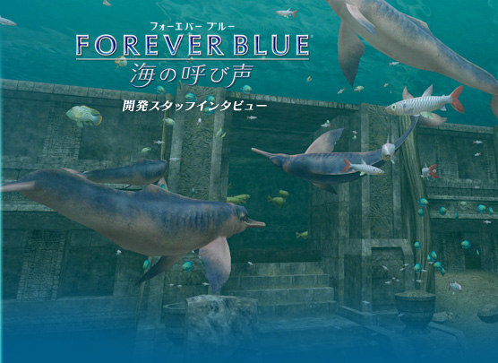
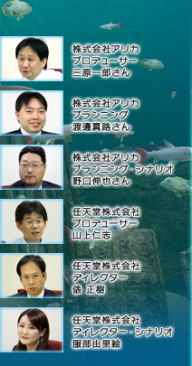
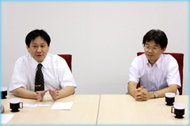
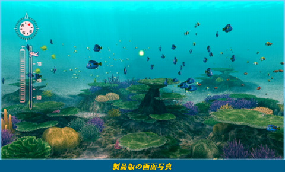

N.O.M
前作の『FOREVER BLUE』が2007年8月に発売されました。その後、『FOREVER BLUE 海の呼び声』の開発が始まった経緯は？
俵
前作は、「癒し」をテーマに「静かで美しい海」を楽しんでいただこうという意図で開発が進み、このコンセプトが海外を中心に多くのお客さまに受け入れていただくことができたと感じています。また、海外では「安心して子供と一緒に楽しめる」という評判もいただきました。
三原
海外であんなに売れるとは思ってなかったですね。ヨーロッパのお子さんからエアメールが届きまして、私は読めないんで他の人に読んでもらったところ、「『FOREVER BLUE』が大好きで毎日イルカをなでてます」と。

山上
その前作が終わってすぐの頃から、三原さんに「もうちょっと時間があったらこんなことができる」と聞かされていました。
渡邊
『FOREVER BLUE』に限らず、制作中に出てきた提案はできるだけ反映させて良くしていくのですけど、どうしても限られた時間の中で盛り込むのが難しいところというのが出てくるんですね。
山上
前作では、とにかく海を再現することに注力していて、それが実現できました。でも一方で、開発終盤に物語を作ることになり、どうしてもスケール感が十分に出せなかった部分があったかなと。もし次をやるならということで、僕が最初に言ったのが「今回はもっとダイナミックな海にしたい」と。海は怖くて危険なもので、たとえば、サメも出てくるし、酸素ボンベの空気もなくなるし。海の本来の姿すべて、癒される部分もあれば、危険な部分もある、全部をあますところなく表現できたらいいですね、とお話しました。
三原
前作を作ったことで得た知識を元に作り直した新しいシステムを作り、発売から2ヶ月後くらいには、デモンストレーション版ができてました。
山上
その時点で、画面上に表示できる魚の密度だけ見ても3倍になっていたんです。これならダイナミックな映像表現ができる、海の違う面を見せることができる。それに、今度はシナリオも最初から考えることができる。これは海を題材にしていろいろな楽しみ方ができるゲームになるぞと確信したんです。
俵
アリカさんの技術へのこだわりは半端じゃないんです。ハードウェアの処理能力の限界まで常に攻め続けている感じです。また、前作もそうでしたが、三原さんは愚痴は多い方なんですけど、言ったことは必ずやってくださるんですよ（笑）。
三原
愚痴はすっごい言いますよ！（笑）。
俵
本作でも「1つの画面の中に前の3倍の魚を出します」とか「画面の切り替えナシで泳げる海をやります」とおっしゃるんで、三原さんが言うからにはできるんだろうなと。
山上
結構いつも大胆なことをおっしゃるんですよ。「ほんとにできるの？」って思うんですけど、おっしゃることはちゃんとできるんですよね。
三原
前作の経験を踏まえて、もっとできると思っていたんです。
実験で3,000匹くらいのイワシの大群と大きなクジラが出てくるシーンをコマ落ちせず動かすことができていました。魚の数も本当は4,000匹は出せると思っていたんですが、実際にいろんな要素が入ると3,000匹くらいかなと割り引いてお伝えしました（笑）。
あと、サンゴなどの背景も今までの倍細かく描かれています。

山上
前回の『FOREVER BLUE』を作って技術の蓄積が進んだことで、「あぁ、こうやればできるぞ」ということに気がつくんですよね。ところが、開発途中で気付いたことは部分的にしか反映できませんので、「今度は新しく作ればこのくらいできる」という技術的な進化をずっとアピールされていたわけです。私も元技術者ですし、任天堂の社長も元技術者ですから、その技術の進化を見てみたいよねと、それがお客さまの感動につながるのであればもう一度作る価値があると判断したんです。